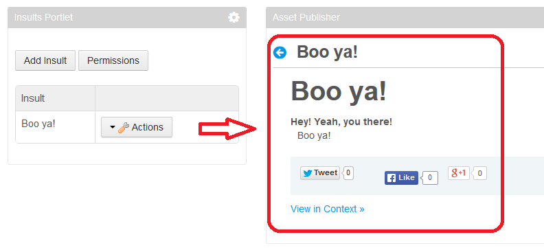

To use Liferay’s asset framework with an entity, you must inform the asset framework about each entity instance you create, modify, and delete. In this sense, it’s similar to informing Liferay’s permissions framework about a new resource. All you have to do is invoke a method of the asset framework that associates an AssetEntry with the entity so Liferay can keep track of the entity as an asset. When it’s time to update the entity, you update the asset at the same time.
To leverage assets, you must also implement indexers for your portlet’s entities. Liferay’s asset framework uses indexers to manage assets.
This tutorial shows you how to enable assets for your custom entities and implement indexes for them. It’s time to get started!
In your project’s service.xml file, add an asset entry entity reference for your custom entity. Add the following reference tag before your custom entity’s closing </entity> tag.
<reference package-path="com.liferay.portlet.asset" entity="AssetEntry" />
Then run Service Builder.
Now you’re ready to implement adding and updating assets!
Your -LocalServiceImpl Java class inherits from its parent base class an AssetEntryLocalService instance; it’s assigned to the variable assetEntryLocalService. To add your custom entity as a Liferay asset, you must invoke the assetEntryLocalService’s updateEntry method.
Here’s what the updateEntry method’s signature looks like:
AssetEntry updateEntry(
long userId, long groupId, Date createDate, Date modifiedDate,
String className, long classPK, String classUuid, long classTypeId,
long[] categoryIds, String[] tagNames, boolean listable,
boolean visible, Date startDate, Date endDate, Date publishDate,
Date expirationDate, String mimeType, String title,
String description, String summary, String url, String layoutUuid,
int height, int width, Double priority)
throws PortalException
Here are descriptions of each of the updateEntry method’s parameters:
userId: identifies the user updating the content.groupId: identifies the scope of the created content. If your content doesn’t support scopes (extremely rare), pass 0 as the value.createDate: the date the entity was created.modifiedDate: the date of this change to the entity.className: identifies the entity’s class. The recommended convention is to use the name of the Java class that represents your content type. For example, you can pass in the value returned from [YourClassName].class.getName().classPK: identifies the specific entity instance, distinguishing it from other instances of the same type. It’s usually the primary key of the table where the entity is stored.classUuid: serves as a secondary identifier that’s guaranteed to be universally unique. It correlates entity instances across scopes. It’s especially useful if your content is exported and imported across separate portals.classTypeId: identifies the particular variation of this class, if it has any variations. Otherwise, use 0.categoryIds: represent the categories selected for the entity. The asset framework stores them for you.tagNames: represent the tags selected for the entity. The asset framework stores them for you.listable: specifies whether the entity can be shown in dynamic lists of content (such as asset publisher configured dynamically).visible: specifies whether the entity is approved.startDate: the entity’s publish date. You can use it to specify when an Asset Publisher should show the entity’s content.endDate: the date the entity is taken down. You can use it to specify when an Asset Publisher should stop showing the entity’s content.publishDate: the date the entity will start to be shown.expirationDate: the date the entity will no longer be shown.mimetype: the Multi-Purpose Internet Mail Extensions type, such as ContentTypes.TEXT_HTML, used for the content.title: the entity’s name.description: a String-based textual description of the entity.summary: a shortened or truncated sample of the entity’s content.url: a URL to optionally associate with the entity.layoutUuid: the universally unique ID of the layout of the entry’s default display page.height: this can be set to 0.width: this can be set to 0.priority: specifies how the entity is ranked among peer entity instances. Low numbers take priority over higher numbers.The following code from Liferay’s Wiki application’s -LocalServiceImpl Java class demonstrates invoking the updateEntry method on the wiki page entity called WikiPage. In your add- method, you could invoke updateEntry after adding your entity’s resources. Likewise, in your update- method, you could invoke updateEntry after calling the super.update- method. The code below is called in the WikiPageLocalServiceImpl class’s updateStatus(...) method.
AssetEntry assetEntry = assetEntryLocalService.updateEntry(
userId, page.getGroupId(), page.getCreateDate(),
page.getModifiedDate(), WikiPage.class.getName(),
page.getResourcePrimKey(), page.getUuid(), 0,
assetCategoryIds, assetTagNames, true, true, null, null,
page.getCreateDate(), null, ContentTypes.TEXT_HTML,
page.getTitle(), null, null, null, null, 0, 0, null);
Indexer<JournalArticle> indexer = IndexerRegistryUtil.nullSafeGetIndexer(
WikiPage.class);
indexer.reindex(page);
Immediately after invoking the updateEntry method, you must update the respective asset and index the entity instance. The above code calls the indexer to index (or re-index, if updating) the entity. It’s that easy to update assets and indexes.
Next, you’ll learn what’s needed to properly delete an entity that’s associated with an asset.
When deleting your entities, you should delete the associated assets and indexes at the same time. This cleans up stored asset and index information, which keeps the Asset Publisher from showing information for the entities you’ve deleted.
In your -LocalServiceImpl Java class, open your delete- method. After the code that deletes the entity’s resource, you must delete the entity instance’s asset entry and index.
Here’s some code which deletes an asset entry and an index associated with a portlet’s entity.
assetEntryLocalService.deleteEntry(
ENTITY.class.getName(), ENTITY.getInsultId());
Indexer indexer = IndexerRegistryUtil.nullSafeGetIndexer(ENTITY.class);
indexer.delete(ENTITY);
In your -LocalServiceImpl class, you can write similar code. Replace the ENTITY class name and variable with your entity’s name.

Figure 1: It can be useful to show custom entities, like this wiki page entity, in a JSP or in an Asset Publisher.
Great! Now you know how to add, update, and delete assets in your portlets!